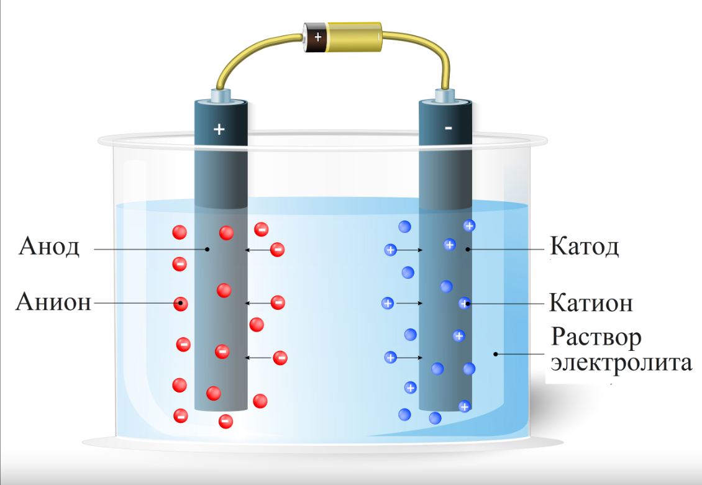

"Современные технологии должны извиниться перед экологией"
Уэнделл Берри
Электрический ток вызывает окислительно-восстановительные реакции в растворах и расплавах электролитов. Впервые электрический ток в химии использовал английский учёный Гемфри Дэви. Подвергая электролизу расплавы различных соединений, он открыл шесть неизвестных до него элементов, что стало одним из самых выдающихся событий в истории открытия новых химических элементов.
Рис.1 - Устройство электролиза
Электрохимическое извлечение практически не изменялось, но 20 лет назад появились передовые технологии электролиза, основанные на использовании цилиндрических ячеек с высокой скоростью протока, повышающей объемы массопереноса. Ячейки способны работать при низкой концентрации и обеспечивают выпуск продукции высокой степени чистоты даже в присутствии примесей. Первая цилиндрическая электролизная ячейка была разработана и выпущена на рынок компанией Electrometals под названием emew, что означает Electrometals electrowinning (электрохимическое извлечение по методу Electrometals).
Преимущества цилиндрических ячеек расширили область применения электрохимического извлечения за пределы простой очистки металлов, позволив использовать его для переработки, утилизации твердых отходов, очистки сточных вод и даже в таких высокотехнологичных областях как производство полупроводников.
Подробнее ознакомиться с электролизом можно здесь